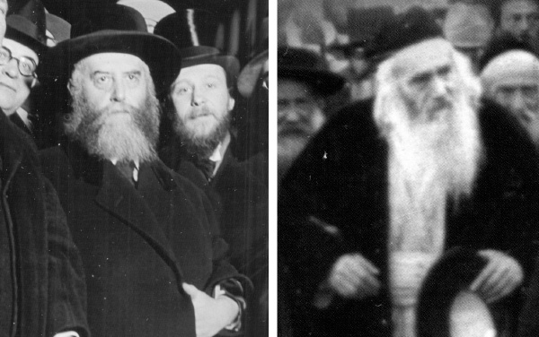

Between Lubavitch and Yerushalayim
About the relationship between the Rebbe Rayatz and Rabbi Yosef Chaim Sonnenfeld, despite the physical distance between them and the difference in their ideologies and approach. Letters on communal matters were sent from Lubavitch to Yerushalayim and from Yerushalayim to Lubavitch. The Rebbe then met R’ Sonnenfeld in person when he visited Eretz Yisroel in 5689. * Presented for 12-13 Tammuz.

Very little has been written about the relationship between the Gaon Rabbi Yosef Chaim Sonnenfeld and the Rebbe Rayatz. This was an unusual relationship between great spiritual leaders who were both physically and ideologically distant from one another. And yet, they had a warm, strong relationship.
As a researcher, the first questions that come to mind are: Who initiated the relationship? What did they talk about when the Rebbe visited Eretz Yisroel? Which Chabad rabbanim were in touch with R’ Sonnenfeld who served as the rav of Yerushalayim and the Gaon Av Beis Din of the Eidah HaChareidis?
THE GAON AV BEIS DIN
The Gaon Rabbi Yosef Chaim Sonnenfeld was born in 5609/1849 in Slovakia. In his youth, he was educated by outstanding rabbanim including the K’sav Sofer, the son of the Chasam Sofer. He moved to Eretz Yisroel in 5633/1873 and settled in Yerushalayim where he became close with the Gaon Rabbi Moshe Yehoshua Leib Diskin, and his son, Rabbi Yitzchok Yeruchem Diskin. He acquired a reputation as a talmid chacham, gaon (genius) and pikeiach (clever person), and was one of the distinguished rabbanim of the Old Yishuv in Yerushalayim.
In 5679/1919, R’ Avrohom Yitzchok Kook was appointed the rav of Yerushalayim. The religious groups were afraid that the Zionists were trying to control religious life in Eretz Yisroel by establishing a chief rabbinate and appointing rabbanim to their liking. As a result, the Vaad Ha’ir HaAshkenazi was founded in 5680/1920, which later became known as the Eidah HaChareidis. R’ Sonnenfeld was appointed to serve as the Gaon Av Beis Din of Yerushalayim, i.e. the head of the beis din of the Eidah HaChareidis. At the same time, R’ Kook was appointed as the chief rabbi of the entire Eretz Yisroel, despite strong opposition from the religious public led by R’ Sonnenfeld.
Once R’ Sonnenfeld was chosen as the Gaon Av Beis Din, he was considered the leader of religious Jewry in Yerushalayim and throughout Eretz Yisroel. He served in this position until his passing in 1932. It was during his reign as Gaon Av Beis Din that he was in touch with the Rebbe Rayatz.
How did he connect with Chabad and the Rebbe? Probably thanks to the outstanding Chabad rabbanim who lived in Yerushalayim and were regularly in touch with R’ Sonnenfeld, like the brothers-in-law, R’ Shlomo Yehuda Leib Eliezerov and R’ Mendel Na’ah. Both were heads of Kollel Chabad, the central Chabad organization in Eretz Yisroel at that time. In later years, after he was appointed Gaon Av Beis Din, R’ Chaim Na’ah was also in touch with him.
Some of these same Chabad rabbanim escorted the Rebbe Rayatz on his historic meeting with R’ Sonnenfeld.
THE CONNECTION WITH KOLLEL CHABAD
Iyar 5680/1920. R’ Yosef Chaim Sonnenfeld was appointed Gaon Av Beis Din Yerushalayim. This was a drastic step and counterbalance to the steps the Zionists had taken, including the appointment of R’ Kook as the Ashkenazi Rabbi of Jerusalem, and soon after, as first Ashkenazi Chief Rabbi of Palestine in 1921. Distinguished rabbanim in Yerushalayim signed the letter of coronation appointing R’ Sonnenfeld as Gaon Av Beis Din of Yerushalayim. Among the signatories were R’ Moshe Horenstein and R’ Yosef Levi Chagiz, representatives of Kollel Chabad.
Apparently, in the summer of 1921, in the period following his appointment as Gaon Av Beis Din, R’ Sonnenfeld wrote to the Rebbe Rayatz for the first time. What motivated him to write a letter from Yerushalayim to Rostov in communist Russia? It is not known, nor do we know the content of the letter. What we do know is the Rebbe’s response to him in a letter dated 11 Tammuz 5681, in which he writes that Kollel Chabad conducts itself as it always had, “under the supervision and influence of R’ MM Na’ah, as per his instructions and that of the Chief Rabbi R’ YC Sonnenfeld.”
R’ SONNENFELD DECLARES A DAY OF PRAYER FOR THE REBBE
When news of the Rebbe Rayatz’s arrest reached Eretz Yisroel in Sivan 5627, R’ Sonnenfeld was greatly saddened. He saw the arrest as something that threatened the entire future of the Jewish people in Soviet Russia. Due to the gravity of the situation, the beis din issued a call to increase prayer in all the shuls and to proclaim 6 Tammuz as a general day of prayer at the Western Wall. Indeed, a large crowd gathered on that day to offer up heartrending prayers for the release of the Lubavitcher Rebbe.
For the first Chag Ha’Geula, on 12 Tammuz 5688/1928, rabbanim and public figures put out announcements and letters of brachos and good wishes for the Rebbe Rayatz. R’ Sonnenfeld also publicized a letter which was put into Kol Yisroel of Agudath Israel:
I also join the rabbanim, gaonim, and tzaddikim in every location that established the day of 12 Tammuz, the anniversary of the release of the gaon and holy and famous Admur R’ Yosef Yitzchok Schneersohn of Lubavitch, last year in Soviet Russia, in his heroic defense of all sacred aspects of our religion, who with literal self-sacrifice endangered his pure soul for the holiness of our holy Torah and for all the Jewish people. We give thanks to the good G-d for His many kindnesses and great mercy that He did with the holy tzaddik of Lubavitch, in rescuing him from the clutches of the cruel hands that desire to swallow up all that is holy. On this day shall it be recalled upon the hearts of all our dear brethren, loyal believers of Yisroel, to arouse with holy inspiration, to strengthen and support the institutions of Torah and pure Judaism… .
One who writes and signs in honor of the Admur, gaon and tzaddik of Lubavitch, who awaits the salvation of Yisroel with the complete Geula,
Yosef Chaim Sonnenfeld
The Rebbe Rayatz responded in a letter which he begins with many illustrious titles and in which the Rebbe thanks him for his blessings and then says that the Jews of the Soviet Union need help from the Jews living in other countries. He asked R’ Sonnenfeld to get information about which askanim in those countries familiar to him (Czechoslovakia and Hungary) could be asked to help out.
We don’t know about the joint activities that were done as a result, but we know that R’ Sonnenfeld was constantly in touch with the Rebbe regarding “their large scale joint activities.”
MIVTZA MATZA 5689
In the winter of 5689/1929, the suffering of Soviet Jewry reached its peak. The government clamped down with an iron fist regarding anything to do with mitzvos. Due to the economic policies at the time, the price of flour went up and it was feared that they wouldn’t have matza for Pesach.
The Rebbe had left Russia for Latvia the year before; from there, he began enlisting help from Jewish communities in Europe and the US on behalf of the Jews under communist rule. An important part of the campaign entailed enlisting the support of Jewish leaders in providing matza to Soviet Jews.
R’ Sonnenfeld was marking his eightieth birthday and the Rebbe sent him a letter of congratulations. The Rebbe used this letter to also ask for his help in providing matza for the Jews of the Soviet Union, describing the situation as terrible, appalling, and shocking.
The Rebbe’s son-in-law, R’ Shmaryahu Gurary (Rashag), who was one of the main activists in the matza campaign, sent another letter to R’ Sonnenfeld a few days later, which included specific requests as far as his participation and support. He included a Kol Korei that had been signed by the Rebbe Rayatz, the Chafetz Chaim, and R’ Ozer Grodzensky. Rashag asked R’ Sonnenfeld to issue a similar proclamation and to urge the Jews of Slovakia and Hungary in particular (those countries where R’ Sonnenfeld had lived before he moved to Eretz Yisroel) to help.
R’ Sonnenfeld acceded to this request and signed a proclamation. Mivtza Matza 5689 was very successful. 28 train compartments filled with thousands of packages of matza were sent to the Soviet Union, where they were distributed by rabbanim and heads of communities.
When the campaign was over, Rashag sent R’ Sonnenfeld a detailed report about it.
THE REBBE’S UPCOMING TRIP
20 Sivan 1929: the surprise breaking news of the day was about the expected arrival in the Holy Land of the Rebbe Rayatz. In Kol Yisroel an article was featured about the Rebbe’s planned trip, with details of how R’ Sonnenfeld helped him obtain a visa. The news item said:
The Admur of Lubavitch shlita to Eretz Yisroel
The Rav [R’ Yosef Chaim Sonnenfeld] received a telegram from the Lubavitcher Rebbe who is presently in Riga, which said that he wants to visit Eretz Yisroel together with his son-in-law. With R’ Sonnenfeld’s efforts, a telegram was immediately sent from the Aliya Department to the British consul in Riga telling him to give him the required visa.
The Rebbe thanked him in a special letter for his help in obtaining a visa.
The city of Yerushalayim began preparing to receive the famous Rebbe of Lubavitch who had just recently shaken up the Jewish world with the episode of his heroism in his famous arrest.
As the date of his arrival approached, signs went up calling on people to attend the welcoming reception to be held in his honor. The announcements were signed by organizations and mosdos of various groups in Yerushalayim, including the Eidah HaChareidis.
GIVE HONOR TO THE TORAH
9:15 on Thursday morning, 2 Av, the tzaddik who stands in the breach, the Lubavitcher Rebbe, will arrive. Those who hold our Torah dear, and those who hold dear the great work of the Admur in saving Judaism and strengthening it, are asked to give honor to the Torah and to welcome the Rebbe at the train with the honor due him.
The Eidah HaChareidis,
Vaad Ha’ir for the Ashkenazic community
Yerushalayim
R’ Sonnenfeld did not suffice with an announcement signed by the Eidach HaChareidis. He sent his personal representative to the reception that took place at the train station in Yerushalayim.
The train arrived at 9:30 in Yerushalayim; from the station, the Rebbe traveled to the Amdursky hotel. At 11:00, only an hour and a half after the Rebbe arrived in Yerushalayim, the Gaon Av Beis Din went to the hotel to visit the Rebbe. R’ Sonnenfeld was accompanied by the dayan, R’ Yitzchok Frankel, R’ Shimon Horowitz (menahel of Yeshivas Shaar HaShamayim), R’ Yaakov Yitzchok Teitelbaum, and senior Chabad Chassidim (attending these meetings were: R’ Shlomo Yehuda Leib Eliezerov, R’ Mendel Na’ah and his son R’ Chaim, and at least one meeting R’ Yitzchok his brother was also present).
The Rebbe wrote in his diary about this meeting:
The elderly Rabbi Sonnenfeld came at 11 to offer greetings. It was a great honor since he had already sent his representative, and by doing so, he had really fulfilled his obligation, and then the guest is supposed to go first, but he did both, he sent his representative and came himself. He sat for a few minutes and then left.
After a brief stay at the hotel, the Rebbe went to the Kosel and then returned the visit to R’ Sonnenfeld, to the tiny apartment in Battei Machaseh in the Old City.
When R’ Sonnenfeld heard that the Rebbe was on his way to see him, he went out to greet him with a large crowd and welcomed him with great honor, as the Rebbe described it in his diary:
And he brought me into his home and he walked on the left, and he seated me in his chair and said Divrei Torah about Yosef who sustained the entire world with his grain.
… I paid a return visit to R’ Sonnenfeld. When he heard that I was coming to him, he came out with a large crowd to greet me. I sat with him for ten minutes and then went to the hotel.
Among those who were at their meeting was R’ Dov Sonnenfeld, the grandson, who told about the visit:
I remember the time of the electrifying visit of the Admur, the gaon and holy R’ Yosef Yitzchok in Yerushalayim at [the home of] my grandfather, R’ Yosef Chaim Sonnenfeld, who yearned to gaze upon the Rebbe’s holy visage … What tremors of holiness hovered in the air between these two tzaddikim – it was indescribable! When my grandfather asked the Rebbe to bless one of his grandsons, he said that the two words at the beginning of the Shmoneh Esrei “[u’meivee goel] livnei v’neihem” (He brings redemption to the sons of their sons) are numerically equivalent to “tz’daka” (199), as the prophet said, “With tz’daka you shall establish me [referring to the city of Yerushalayim],” and my grandfather added that in any spiritual situation which the grandchildren, the descendants of the Avos, would find themselves in, with the mitzva of tz’daka they will be redeemed.
In the famous book about R’ Sonnenfeld, Ha’Ish al HaChoma, the meeting is described as having been particularly warm. The Rebbe and R’ Sonnenfeld sat and talked; the main topic was how to save Jews in communist Russia.
A week later, on Friday, 10 Av, the Rebbe visited the Diskin Orphanage Home where he was welcomed by R’ Sonnenfeld, R’ Eliyahu Klatzkin, and all the members of the administration. On Sunday, the Rebbe visited R’ Sonnenfeld again, this time accompanied by the Sephardic Chief Rabbi, Rabbi Yaakov Meir. The visit lasted forty minutes, but we have no information about what was discussed.
R’ Sonnenfeld passed away in Adar 1932. Some of his great-grandchildren and great-great-grandchildren are Lubavitchers: R’ Shimon Sonnenfeld – Nachalat Har Chabad, R’ Yosef Chaim Sonnenfeld – Yerushalayim, R’ Elozor Gelbstein – Yerushalayim, Mrs. Miriam (wife of R’ Avrohom) Zigman – Yerushalayim, and the Dunin family whose mother, Rivka, was a great-granddaughter of the Gaon Av Beis Din.
***
Years later, the Rebbe encouraged the printing of R’ Sonnenfeld’s books. In a letter written in 1955 to his grandson R’ Tzvi Sonnenfeld, the Rebbe asked whether the letters of his grandfather had been published.
About twenty years later, in 5734, one of the grandsons had yechidus and the Rebbe asked him, “Are there writings from your grandfather on Kabbala?” The grandson said yes. The Rebbe said, “It would be very worthwhile to print them for the benefit of all.” Then the Rebbe asked the grandson to say a Torah thought from his grandfather.
REVIVING THE AVROHOM AVINU SHUL
During the period preceding World War I, the Rebbe Rashab instructed to begin holding prayer services again in the Avrohom Avinu Shul on the Mitteler Rebbe’s estate in Chevron. However, during the war, many Chabad Chassidim were expelled to Egypt because they were Russian citizens. Some of them did not return afterward to Chevron, but settled in Yerushalayim.
The Chabad community in Chevron dwindled and the minyan at the Avrohom Avinu shul ceased. The shul was abandoned. The one who tried to revive it was R’ Chaim Fuchs, who worked tirelessly to help reinstate the Chabad minyan in the shul. R’ Sonnenfeld joined his name and signature to this cause.
LOOKING FORWARD EAGERLY TO MOSHIACH’S COMING
The Chassid R’ Avrohom Vilny, one of the elders of Yerushalayim, related:
R’ Yosef Chaim Sonnenfeld had a shiur every evening in the shul in the Battei Machaseh neighborhood in the Old City. R’ Sonnenfeld would speak a lot about the imminent coming of Moshiach and would urge the listeners to look forward to his coming.
One of the talmidim asked, “But you are delaying Moshiach, because it says Moshiach won’t come unless we are in a state of distraction!”
R’ Sonnenfeld answered cleverly, “If, right now, a very trustworthy person would come and tell us that Moshiach arrived and he is on Rechov HaYehudim in the Old City, wouldn’t you hesitate for at least a moment before you ran to see him? That is genuine ‘hesech ha’daas’ (being in a state of distraction).”
RABBI SONNENFELD AND THE RABBANEI CHABAD IN YERUSHALAYIM
Some of the great rabbanei Chabad in Yerushalayim were in close contact with R’ Yosef Chaim Sonnenfeld:
R’ Shlomo Yehuda Leib Eliezerov – He was one of the leaders of Chabad in Yerushalayim. R’ Sonnenfeld highly valued his opinion in Halacha in general and on the topic of mikvaos in particular. He authorized him to issue rulings on, and to supervise, the kashrus of mikvaos, and to respond in his name to questions on these matters from abroad.
When R’ Eliezerov traveled to the United States in 5687 to help build mikvaos, he was supplied with a warm recommendation in which R’ Sonnenfeld emphasized his knowledge of mikvaos, an area in which his expertise was well known in Eretz Yisroel and abroad. When R’ Sonnenfeld built a mikva in his home, he had R’ Eliezerov supervise its construction.
R’ Eliezerov was also involved in kashrus matters for the Eidah HaChareidis.
R’ Mendel Na’ah – He moved to Yerushalayim in 5665 upon the recommendation of R’ Sonnenfeld, and in the following years he was in close contact with him. His son, R’ Chaim Na’ah, received approbations to his s’farim from R’ Sonnenfeld and served as his personal aide. He was appointed to this task in 5681 and fulfilled it devotedly for two years. In this capacity, he managed and handled all of R’ Sonnenfeld’s personal and communal matters. R’ Sonnenfeld considered him an outstanding talmid chacham who knew how to pasken practical Halacha, and he approved of his p’sakim and chiddushim.
In a eulogy that R’ Na’ah wrote after the passing of R’ Sonnenfeld, he described the tremendous impression made on him during those two years:
I merited serving him as a scribe and secretary for two years (81 and 82) and many burning issues in the religious world, in particular in the Holy City, were on the front of his mind. And he [R’ Sonnenfeld], with his great and deep spirit of wisdom, and with his fear of Heaven that preceded his wisdom, placed us in a ray of light and illuminated the paved path for us upon which our holy ancestors walked. He taught us the tactics of war with literal mesirus nefesh, against those trying to tear down [traditional Judaism] and their cronies.
R’ Sonnenfeld attended the funeral of the elderly and distinguished Chabad Chassid, R’ Dovid Tzvi Chein (Radatz), who served for many years as Gaon Av Beis Din in Chernigov in the Ukraine. He moved to Eretz Yisroel in 5685 and settled in Yerushalayim. He lived only nine months in Yerushalayim and passed away in Kislev 5686.
Berger. "Between Lubavitch and Yerushalayim." Beis Moshiach, no. 884 (June 19, 2013).